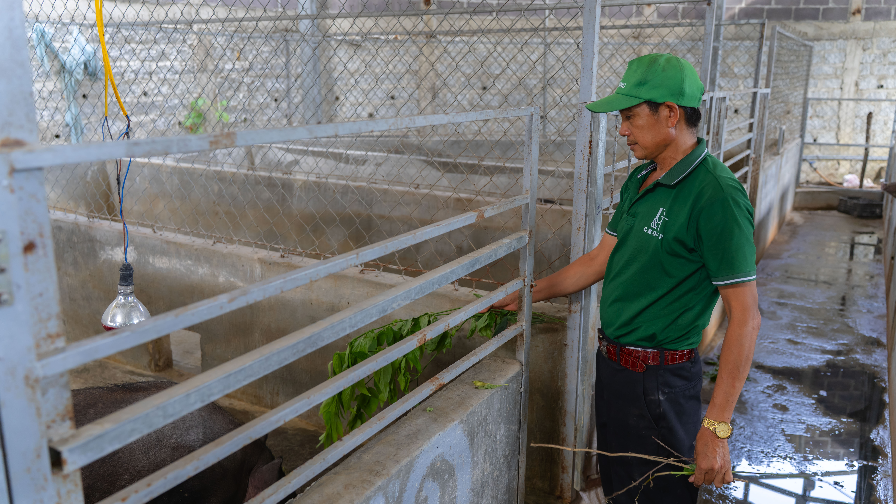

Chăn Nuôi Hữu Cơ: Hướng Đi Bền Vững Từ Đất - Nuôi - Bàn Ăn
Chăn nuôi hữu cơ không chỉ đơn thuần là nuôi động vật, mà là một mô hình phát triển bền vững, lấy thiên nhiên làm gốc, sức khỏe con người làm trung tâm. Tại trang trại DT, quy trình chăn nuôi heo rừng, gà vườn, cá sạch được thực hiện theo chuẩn hữu cơ, không kháng sinh – không chất tăng trọng – không gây ô nhiễm môi trường. Chúng tôi tái sử dụng phụ phẩm nông nghiệp, tận dụng cỏ dại, rau vườn, và trùn quế để tạo nên chuỗi tuần hoàn sinh học – vừa tiết kiệm chi phí, vừa nuôi dưỡng vật nuôi khỏe mạnh tự nhiên.